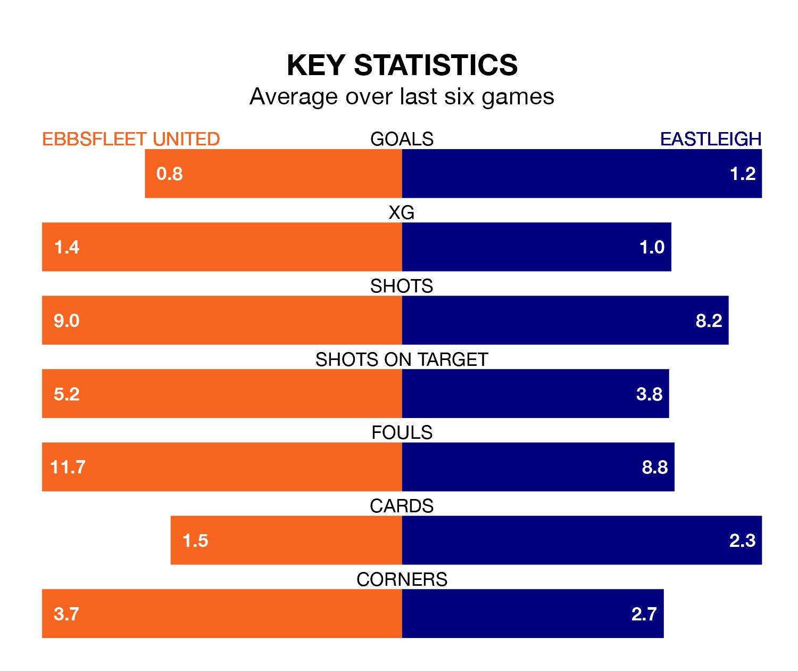

Eastleigh come to the Kuflink Stadium to play Ebbsfleet United on Saturday in terrible form, having collected just two points from their last six games.
The visitors have drawn two and lost four of their last six fixtures, while Ebbsfleet have two wins and two draws.
Ebbsfleet are 23rd in the table after 33 games, of which they have won eight and drawn eight, earning 32 points.
Eastleigh are seven places ahead of United in 16th, with 10 wins and nine draws putting them on 39 points.
With 40 goals in 33 games so far this season, the hosts are scoring at below the league average rate with 1.2 goals per game. And they are conceding more than average, letting in 58 goals at a rate of 1.8 per game.
The Spitfires, meanwhile, are above average scorers, with 1.7 goals per game, compared to a league average of 1.5. They have conceded 2.0 goals per game.
In the last 10 years, Ebbsfleet and Eastleigh have played each other on eight occasions. Ebbsfleet won four of them, Eastleigh one, and they drew three times.
On average, Ebbsfleet scored 1.6 goals and the Spitfires 1.2 in those matches.
Their last meeting was on October 3, when Eastleigh won 5-2 at home.
Ebbsfleet's last match was on February 10, a 2-2 draw against Chesterfield, with Benjamin Scott Chapman and Rakish Phillip Bingham getting the goals for Ebbsfleet.
Eastleigh lost 2-1 against Fylde last time out, also on February 10, with Ben Reeves on the scoresheet.
Updated: 13:04 (UTC), 16/02/24